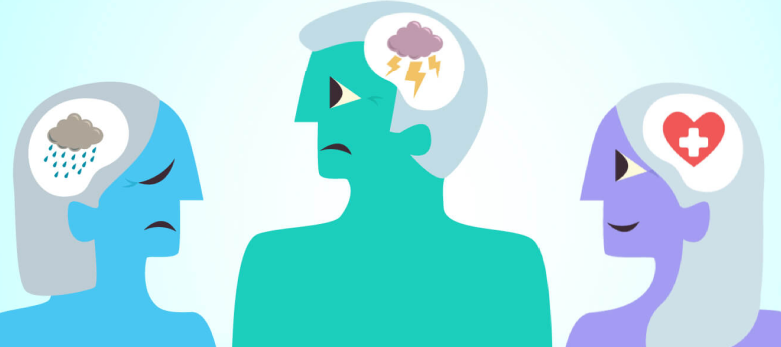

Conoce algunas recomendaciones que te podrían ayudar a evitar momentos de crisis o evitarlas :)
No dudes en consultar a un psicólogo, psiquiatra o consejero si te sientes abrumado. Los profesionales pueden ofrecerte estrategias y apoyo especializado.
Incorpora el ejercicio físico en tu rutina diaria. La actividad física libera endorfinas, que mejoran el estado de ánimo y reducen el estrés.
Define objetivos alcanzables en tu vida personal y profesional. Celebrar pequeños logros puede aumentar tu motivación y autoestima.
Evita el abuso de alcohol, tabaco y otras sustancias que pueden afectar negativamente tu salud mental y física.
Dedica tiempo a aprender algo nuevo, ya sea un idioma, instrumento musical o cualquier habilidad que te interese. Esto estimula la mente y puede proporcionar una sensación de logro.